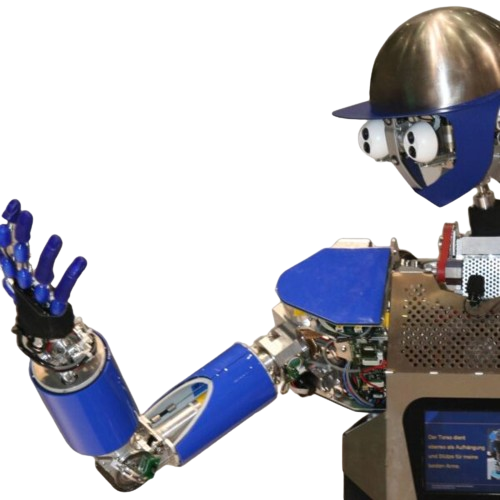

Hand Gesture Controlled Robot
Creating a hand gesture-controlled robot can be a fun and rewarding project that combines electronics, programming, and motion control. Here's a general overview of how you can build one using an Arduino and some basic components:
Components Needed:
Arduino Board: To control the robot and process input from sensors.
Robot Chassis: Includes motors, wheels, and a frame to build the physical robot.
Motor Driver: To control the motors of the robot.
Gesture Sensor: To detect hand gestures.
Power Source: Batteries or a power supply to power the Arduino and motors.
Jumper Wires: For making connections between components.
Optional: LED indicators, buzzer, or other output devices for feedback.